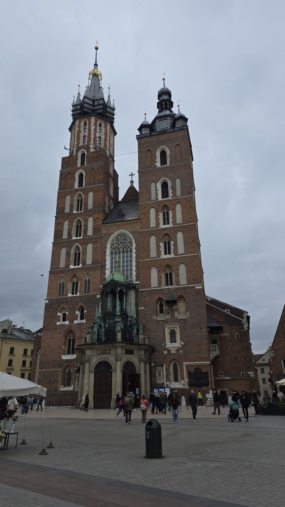

Journey 05 · Kraków Note 3 of 3 Stories of
Stories of Krakow: The Dragon, The Bugler, The Enchanted Knights

Krakow is an old city. Old enough that its stories have had time to get complicated, to branch and contradict and fold back on themselves. Some stories came from plaques on walls, some from a guide with considerable patience for questions. Others came from conversations that happen in warm underground bars when it is cold outside and the vodka is smooth.
Pull up a chair and listen. It’s still cold outside.
The Dragon of Wawel Hill
Pewnego razu, once upon a time, there was a dragon.
Some might say it was the king’s sons who defeated the dragon. Others say it was a prince. The details change depending on who is telling the story and how long ago they heard it. But there was definitely a dragon.
So, bajka – nie bajka. Maybe it’s true, maybe it isn’t. But this is the story I know.
The ferocious dragon lived in a cave beneath the hill that rises above the city of Krakow. The terrible lizard – because that is what it was, enormous and ancient and hungry – terrorized the city below, requiring sacrifices of cattle and sheep to keep it from scorching and devouring the humans instead. The people of Krakow lived in the shadow of the hill and the shadow of the dragon, and for a long time, no one had a solution.
Until Krak, a cobbler who came to the city to make shoes. But who can buy shoes when they are worried about being eaten by a dragon? The brave, clever little shoemaker grew tired of being terrorized and thought about the problem the way cobblers and shepherds and blacksmiths think about problems. Not waiting for an enchanted forest creature or wise old woman who is actually a fairy in disguise to offer a solution or provide a magic tool, but practically, with whatever materials were at hand.
So, Krak wrapped a sack of sulphur in the skin of an old ram and left it on the hillside as an offering to the greedy dragon.
And the dragon, unable to resist what looked like a fat and easy meal, gobbled it up in one bite.
Almost immediately, his stomach began to ache and burn. The sulphur had caught fire inside him, and the dragon, desperate to put out the flames, went to the river and began to drink.
And drink.
And drink.
But the more water he drank, the more the fire burned. His belly grew bigger and bigger, filling with water and smoke and flame, until –
The dragon exploded.
The city was saved! Krak the cobbler was declared a hero, married a princess, and built his castle on the hill above the cave. He renamed the city after himself, which seems like a reasonable reward for the exploding dragon situation.
Today if you visit Wawel Castle, you can see the dragon’s cave beneath it. And in the cathedral, the bones of the terrible dragon hang as a warning to any who might follow.
Or a whale jaw. Mammoth bones. The skull of a woolly rhinoceros.
Bajka – nie bajka.
Close enough.
The Bugler of Saint Mary’s
Pewnego dnia – one day – long ago, in a certain kingdom, in a certain state…
There was a watcher in the tower of Saint Mary’s Basilica in the old town of Krakow, and his job was to play the bugle.
He played at sunrise, and the people of the city would wake from their sleep and say: it must be morning, time to start the day.
He played at sunset, and the people would say: it must be evening, time to rest.
He played four times each morning and night – to the north, the south, the east, and the west – so that the whole city could hear, no matter where they stood. The bugle was the heartbeat of Krakow. Everyone knew its sound. Everyone trusted it.
And then one day, as the watcher looked out from his tower, he saw something on the horizon that made his blood run cold.
The Mongol army was coming.
He had no time to send messengers, no time to run down the tower steps and to the gatehouse. There was no time for anything except what he knew how to do. And so, he raised his bugle and began to play even though it was neither morning nor evening. He played his song to the north, the south, the east and the west, saying with his music listen, pay attention, something is very wrong!
The music spread over the town and over the castle. People stopped what they were doing.
“How strange,” some said. “There is work still to be done. The sun is still high.” The guards knew at once “This must be a warning!”
And because they listened, the city gates were closed and locked before the Mongol army arrived. The surprise attack failed. Krakow was saved.
But the invaders were fierce, and they were angry that their plan had been spoiled, their prize denied. As the bugler continued to play his warning, an archer drew back his bow and let an arrow fly straight and true over the wall and across the square.
The melody stopped. Suddenly. Mid-note.
To commemorate the brave watcher, the bugle call is still played today from the tower of Saint Mary’s, every hour, to the north, the south, the east, and the west. And every time, the melody stops suddenly, in the same spot, on the same note, where the brave bugler ended his song centuries ago.
The Pigeons of the Market Square
Pewnego razu, za siedmioma górami, za siedmioma lasami – Once upon a time, behind seven mountains, behind seven forests –
There was once a prince who wanted to unite Poland and claim the crown of Krakow. Ambitious, as princes tend to be, he went to a sorceress for advice on how to conquer the city.
Simple, she told him. Turn your army into pigeons. Set them loose in Krakow. For every stone they peck loose from Saint Mary’s Church, a gold coin will appear. Gather enough gold, and you will have the wealth to claim the city.
The prince did as advised, and his army of pigeons descended on Krakow, pecking industriously at the stones of the church, gathering coins, making quite a mess of things. The plan worked beautifully.
And the Prince was filled with confidence with the success of his plan, as Princes tend to be. Flush with a new wealth of gold coins, he left for Rome to negotiate his claim to the throne – and never came back. With no knights to guide him and too prideful to be wise, as princes tend to be, he spent all his gold on the journey, wasted his resources, and simply never returned to Krakow.
His knights, still pigeons and still loyal, are waiting for him in Krakow.
Today, the pigeons of Krakow’s market square are, officially, enchanted knights. Loyal to the end. Awaiting a prince who is not coming. Their ambition, like his, unfulfilled.
Bajka – nie bajka.
Feed them if you like. They’ve had a long wait.
Originally published at fieldnotesfromabroad.com/2026/04/25/stories-of-krakow-the-dragon-the-bugler-the-enchanted-knights/